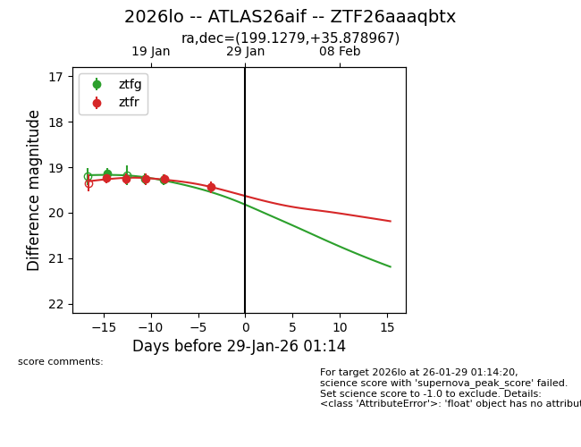
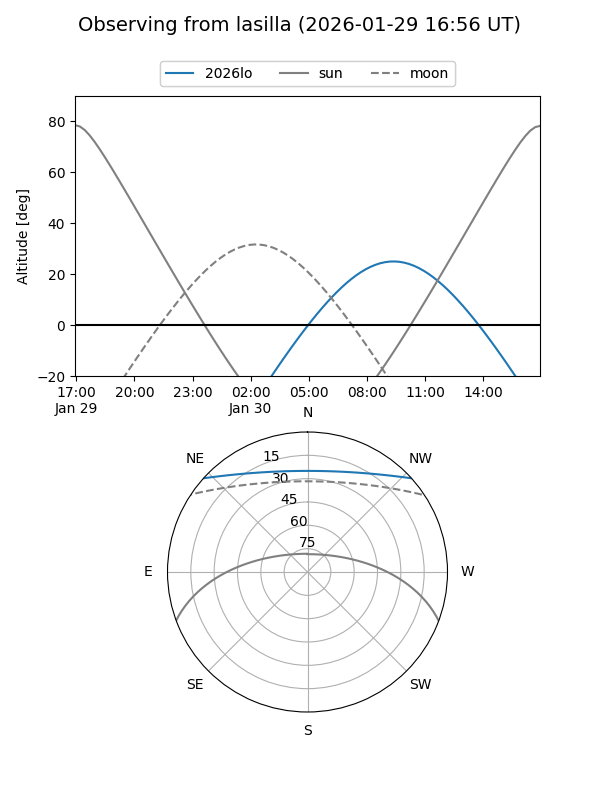
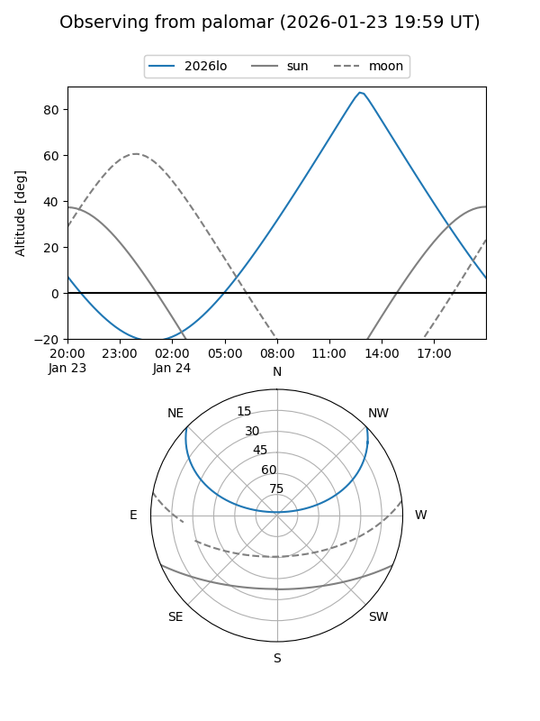
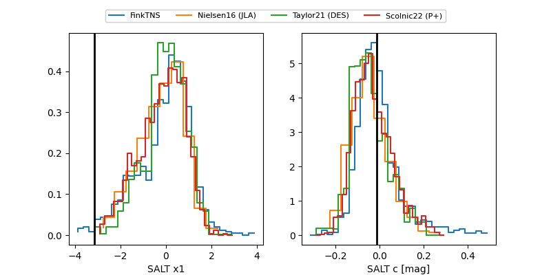

2026lo
Target 2026lo at 2026-01-22 05:26
Aliases and brokers:
FINK: link
Lasair: link
ALeRCE: link
TNS: link
YSE: link
alt names
ZTF26aaaqbtx (ztf,fink_ztf)
2026lo (tns,yse)
ATLAS26aif (atlas)
Coordinates:
equatorial (ra, dec) = 199.1279,+35.87897
equatorial (HMS+DMS) = 13:16:30.71,+35:52:44.28
galactic (l, b) = (93.1108,+79.75241)
Flags:
Photometry:
last ztfg=19.25, ztfr=19.26
2 ztfg, 3 ztfr detections
Lightcurve

Visibility


Additional plots
